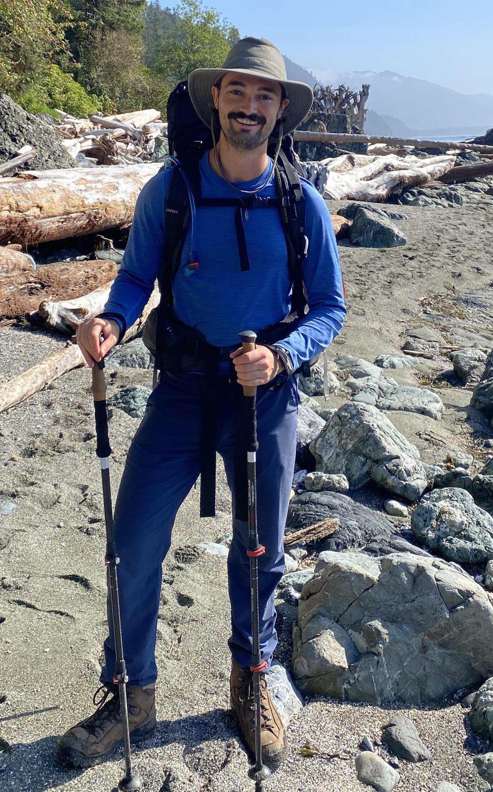

Cover Letter
Last Updated on 28th August 2023
LinkedIn | jack.caldwell@queensu.ca | 905.505.1818 | jack.caldwell@mda.space
To whom it may concern,
With my experience in autonomy/AI, control system software design (languages including C++, Python, in ROS-based environments), simulation, and modeling, I believe I am perfectly suited for any robotics role. Based on my experience researching and designing robotic control systems, I have unique insights to help improve the robotic systems.
My Master's research involved the design of optimal control solutions for safety-critical hydraulically actuated robotic arms. My research culminated in a paper which appeared in the 2021 IEEE International Conference on Intelligent Robots and System regarding an efficient learning-based model predictive controller (MPC). I was able to improve the computational efficiency of nonlinear MPC by 82 times. Following this, I designed the infrastructure for physical testing on an industrial loader, which involved developing the control system from the ground up. My Master's work has allowed me the opportunity to design state of the art controllers and apply practical solutions to real robotic problems. The technical skills acquired through this experience make me an ideal candidate for this position.
I am currently working on autonomy and AI for the Canadarm3 at MDA, where I have developed my strong knowledge of efficient model-based algorithms. I have also gained experience in simulation and modeling at MacLean Engineering. Both MacLean Engineering and MDA products are large-scale robotics with the need for critical safety guarantees. These experiences have taught me to design robust systems with safety being paramount.
One of my key strengths - thanks to my many sports teams, team projects and teaching experience - is the ability to work effectively, and enthusiastically, as a member of a team. I have also developed strong project management skills after multiple years as an engineering design course teaching assistant. More recently, I have had the opportunity to mentor junior engineering employees on the Canadarm3 project, and collaborate on an international scale.
My experience, paired with my passion for robotics, would make me an excellent addition to any robotics team. I am confident my knowledge and drive for delivering unparalleled results would be a great asset.
Thank you for your consideration. I look forward to hearing from you.
Sincerely,
Personal Interests
Outdoors
I love hiking and camping, and generally spending time outdoors. Here are a couple pics of me hiking the West Coast Trail in British Columbia.

Carving
I also enjoy wood carving as a hobby. Here are a few of my carvings I've snapped pics of.
Other
I enjoy playing sports - I play ball hockey, and used to play rep ice hockey.

I love reading, particularly non-fiction books (like Sapiens, On Intelligence, or anything by Malcolm Gladwell), as well as fantasy (like the Expanse, Dune, or the Martian), and historical fiction (like Shogun).
Recently, I've particularly enjoyed creating this website. I also created a "Valentines Day" website for my partner. I learnt a lot along the way, but was also helped along by ChatGPT. Here are some fun pics ChatGPT created while I was playing around creating this site.